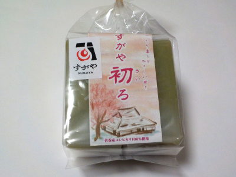
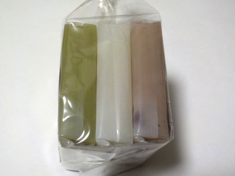

農業組合法人すがやの6個パック入ういろ
2023/05/13

雲南市の菅谷産コシヒカリが使われているウイロです。
製造元は愛知県あま市の五ッ橋橋製菓です。

ノーマル、抹茶、小豆の3種類が2個づつ入っています。
外郎はお米多めでどっしりとした質量のモノとか、水分多めでやわらか系のモノとかありますが、これはどちらでもないです。
中間かな。お団子の中身とはちょっと違うんだけど、なんとなく似ている感じがしました。
甘すぎず固すぎずで、いいバランスのういろでした。